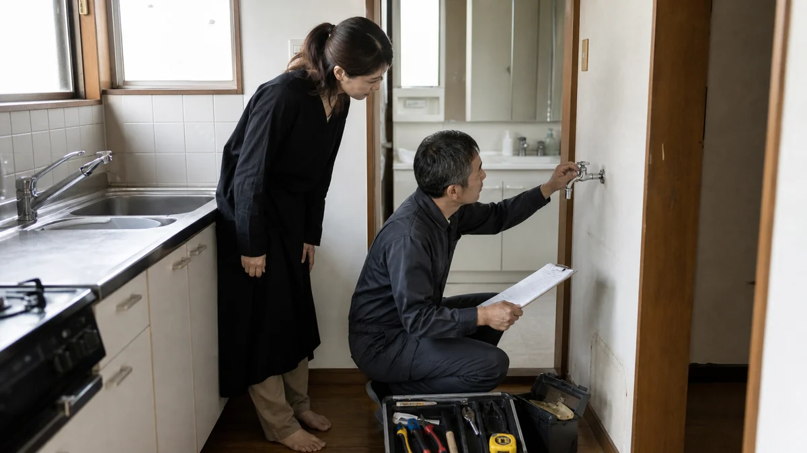
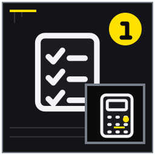

修繕のゴールを四種類に分ける
安全確保、機能回復、印象改善、長寿命化を混同しない。
MITSUKE RENT GUIDE 05
見栄え優先ではなく、安全、使用可否、募集力、計画保全に分け、記録と専門家判断をつなぐ記事。

修繕と維持管理では、資料が全部そろうのを待つより、確認済み・未確認・専門家へ聞く事項を分けるほうが実務は進みます。この記事は古い戸建ての修繕範囲、費用優先順位、貸した後の故障対応に不安がある所有者に向け、14の論点を現地確認と相談準備の順に整理しました。見栄え優先ではなく、安全、使用可否、募集力、計画保全に分け、記録と専門家判断をつなぐ記事。 結論を保証するものではなく、対象物件と契約条件に合わせて確認先を選ぶためのガイドです。
想定している検索時の疑問は、「戸建て賃貸 修繕 どこまで」「入居前 リフォーム」「大家 修理 義務」で修繕判断と備えを知りたい。 以下では広告上の一言で判断せず、記録、比較、相談境界、次の行動を章ごとに示します。
安全確保、機能回復、印象改善、長寿命化を混同しない。
契約状態、容量、年式、試運転の安全な確認範囲を決める。

築年、図面差、壁撤去など懸念を整理する。
部位年齢と点検推奨時期を長期表にする。
安全確保、機能回復、印象改善、長寿命化を混同しない。 不具合ごとに安全確保、機能回復、印象改善、長寿命化のタグを付けます。ぐらつく手すりと色あせたクロスは同じ「古さ」でも緊急度が違います。目的が二つある工事は主目的と副目的を分け、見栄えの工事で危険箇所が隠れないようにします。
手すり補修とクロス変更を別優先度に置く。 第1章の条件を対象物件へ移すときは、一致点、相違点、未確認点を分け、写真・寸法・契約案など必要な根拠を添えます。第1章の例と違う条件こそ判断を変える材料になるため、都合のよい一致だけを選びません。
見栄えが良くても安全上の問題が解消したとは限らない。 第1章では所有者が決める希望、現地で観察できる事実、建築・法務・税務などの専門判断を混在させず、分からない事項は質問として担当者へ渡します。第1章の回答日と前提条件を残し、一般説明を対象物件の結論へ読み替えないようにします。
不具合ごとに目的タグを付ける。 第1章の実施後は担当者、実施日、根拠資料、分かったこと、残った疑問を記録します。第1章の確認期限と連絡先が決まれば、結論が保留でも作業は前進しています。第1章に変更があった場合は旧記録を消さず、変更理由と承認者を追記してください。
屋根外壁、基礎、開口、水回り、電気、外構を漏れなく見る。 外から屋根・外壁・基礎・開口・外構を見て、その後に室内の天井、壁、床、水回り、電気を同じ順で回ります。北側の苔と室内カビの位置を平面図で対応させると原因調査の材料になります。高所や床抜けの危険がある場所には入らず、写真で位置を示します。
北側外壁の苔と室内カビの位置を対応させる。 第2章の条件を対象物件へ移すときは、一致点、相違点、未確認点を分け、写真・寸法・契約案など必要な根拠を添えます。第2章の例と違う条件こそ判断を変える材料になるため、都合のよい一致だけを選びません。
危険箇所へ立ち入らず診断は有資格者へ依頼する。 第2章では所有者が決める希望、現地で観察できる事実、建築・法務・税務などの専門判断を混在させず、分からない事項は質問として担当者へ渡します。第2章の回答日と前提条件を残し、一般説明を対象物件の結論へ読み替えないようにします。
外から内へ同じ順で写真を撮る。 第2章の実施後は担当者、実施日、根拠資料、分かったこと、残った疑問を記録します。第2章の確認期限と連絡先が決まれば、結論が保留でも作業は前進しています。第2章に変更があった場合は旧記録を消さず、変更理由と承認者を追記してください。
発生場所、天候、メーター、染みの変化を記録する。 天井染みは発見日、直前の天候、濃さ、広がりを定点写真で追います。給水漏れが疑われるときは使用停止中の水道メーター変化も安全な範囲で記録します。乾いた跡だけで修理済みと決めず、雨水か給排水かを専門業者が切り分けられる情報を渡します。
大雨後だけ天井染みが濃くなる例を追う。 第3章の条件を対象物件へ移すときは、一致点、相違点、未確認点を分け、写真・寸法・契約案など必要な根拠を添えます。第3章の例と違う条件こそ判断を変える材料になるため、都合のよい一致だけを選びません。
乾いた跡だけで原因や完了を断定しない。 第3章では所有者が決める希望、現地で観察できる事実、建築・法務・税務などの専門判断を混在させず、分からない事項は質問として担当者へ渡します。第3章の回答日と前提条件を残し、一般説明を対象物件の結論へ読み替えないようにします。
発見日時と天候を添えて専門業者へ渡す。 第3章の実施後は担当者、実施日、根拠資料、分かったこと、残った疑問を記録します。第3章の確認期限と連絡先が決まれば、結論が保留でも作業は前進しています。第3章に変更があった場合は旧記録を消さず、変更理由と承認者を追記してください。
契約状態、容量、年式、試運転の安全な確認範囲を決める。 電気は契約状態、分電盤容量、漏電遮断器、設備ごとの通電可否を確認します。ガス閉栓中なら給湯器は未確認とし、無理な開栓や再点火をしません。型番、製造年、エラー表示を撮り、試運転が必要な機器を募集前検査一覧へ集めます。
空き家でガス閉栓中のため未確認とする例を示す。 第4章の条件を対象物件へ移すときは、一致点、相違点、未確認点を分け、写真・寸法・契約案など必要な根拠を添えます。第4章の例と違う条件こそ判断を変える材料になるため、都合のよい一致だけを選びません。
無資格作業や無理な再通電を行わない。 第4章では所有者が決める希望、現地で観察できる事実、建築・法務・税務などの専門判断を混在させず、分からない事項は質問として担当者へ渡します。第4章の回答日と前提条件を残し、一般説明を対象物件の結論へ読み替えないようにします。
未確認設備を募集前検査一覧にする。 第4章の実施後は担当者、実施日、根拠資料、分かったこと、残った疑問を記録します。第4章の確認期限と連絡先が決まれば、結論が保留でも作業は前進しています。第4章に変更があった場合は旧記録を消さず、変更理由と承認者を追記してください。
給水、排水、臭い、漏れ、換気を箇所別に確認する。 台所、浴室、洗面、洗濯、便所ごとに給水、排水、臭い、漏れ、換気を見ます。洗濯排水だけ逆流する場合は使用時間と水量を記し、動画で業者へ伝えます。短い通水で問題なしと断定せず、収納内部や床面に遅れて出る漏れも確認します。
洗濯排水だけ逆流するケースを記録する。 第5章の条件を対象物件へ移すときは、一致点、相違点、未確認点を分け、写真・寸法・契約案など必要な根拠を添えます。第5章の例と違う条件こそ判断を変える材料になるため、都合のよい一致だけを選びません。
短い通水で問題なしと決めない。 第5章では所有者が決める希望、現地で観察できる事実、建築・法務・税務などの専門判断を混在させず、分からない事項は質問として担当者へ渡します。第5章の回答日と前提条件を残し、一般説明を対象物件の結論へ読み替えないようにします。
動画と使用時間を残して見積依頼する。 第5章の実施後は担当者、実施日、根拠資料、分かったこと、残った疑問を記録します。第5章の確認期限と連絡先が決まれば、結論が保留でも作業は前進しています。第5章に変更があった場合は旧記録を消さず、変更理由と承認者を追記してください。
開閉、沈み、転倒、施錠の支障を把握する。 玄関、勝手口、各室建具を開閉し、施錠、引っ掛かり、床の沈み、段差を記録します。補修で症状だけを隠さず、繰り返す建付け不良は下地や構造の確認要否を相談します。高齢者や子どもの動線も想定し、転倒や指挟みの危険度を分けます。
玄関鍵は動くが勝手口が閉まりにくい例を扱う。 第6章の条件を対象物件へ移すときは、一致点、相違点、未確認点を分け、写真・寸法・契約案など必要な根拠を添えます。第6章の例と違う条件こそ判断を変える材料になるため、都合のよい一致だけを選びません。
補修で構造上の問題を隠さない。 第6章では所有者が決める希望、現地で観察できる事実、建築・法務・税務などの専門判断を混在させず、分からない事項は質問として担当者へ渡します。第6章の回答日と前提条件を残し、一般説明を対象物件の結論へ読み替えないようにします。
支障の頻度と危険度を記す。 第6章の実施後は担当者、実施日、根拠資料、分かったこと、残った疑問を記録します。第6章の確認期限と連絡先が決まれば、結論が保留でも作業は前進しています。第6章に変更があった場合は旧記録を消さず、変更理由と承認者を追記してください。
設置位置、作動、交換時期、避難動線を点検対象にする。 住宅用火災警報器は設置場所、型番、製造年、作動確認結果を一覧にします。表示が読めなければ交換時期不明とし、自治体・消防の最新基準を確認します。避難動線上の物、コンセント周辺の焦げ、消火器の期限も同時に見ますが、電気工事は資格者へ渡します。
寝室の警報器製造年が読めない場合を未確認にする。 第7章の条件を対象物件へ移すときは、一致点、相違点、未確認点を分け、写真・寸法・契約案など必要な根拠を添えます。第7章の例と違う条件こそ判断を変える材料になるため、都合のよい一致だけを選びません。
設置基準は自治体・消防の最新情報を確認する。 第7章では所有者が決める希望、現地で観察できる事実、建築・法務・税務などの専門判断を混在させず、分からない事項は質問として担当者へ渡します。第7章の回答日と前提条件を残し、一般説明を対象物件の結論へ読み替えないようにします。
型番写真を撮り消防庁資料と照合する。 第7章の実施後は担当者、実施日、根拠資料、分かったこと、残った疑問を記録します。第7章の確認期限と連絡先が決まれば、結論が保留でも作業は前進しています。第7章に変更があった場合は旧記録を消さず、変更理由と承認者を追記してください。
築年、図面差、壁撤去など懸念を整理する。 築年、確認済証等の資料、図面と現況の差、壁撤去、増築箇所を建築士等へ伝えます。サンルームや接続廊下の資料がない場合は位置と寸法を示し、自分で適法・安全と判断しません。耐震の簡易チェックは質問を作る入口であり、診断結果の代わりにはなりません。
増築したサンルームの資料がない例を扱う。 第8章の条件を対象物件へ移すときは、一致点、相違点、未確認点を分け、写真・寸法・契約案など必要な根拠を添えます。第8章の例と違う条件こそ判断を変える材料になるため、都合のよい一致だけを選びません。
簡易チェックで安全や適法性を断定しない。 第8章では所有者が決める希望、現地で観察できる事実、建築・法務・税務などの専門判断を混在させず、分からない事項は質問として担当者へ渡します。第8章の回答日と前提条件を残し、一般説明を対象物件の結論へ読み替えないようにします。
建築士等へ資料と現況差を提示する。 第8章の実施後は担当者、実施日、根拠資料、分かったこと、残った疑問を記録します。第8章の確認期限と連絡先が決まれば、結論が保留でも作業は前進しています。第8章に変更があった場合は旧記録を消さず、変更理由と承認者を追記してください。
原因調査、材料、数量、保証、除外を比較する。 二つの見積は総額ではなく、原因調査、施工面積、材料、下地補修、養生、廃棄、保証、除外を横並びにします。塗装面積が違えば数量根拠を質問し、追加工事が出る条件も確認します。回答は口頭で終わらせず、見積書へ追記して比較可能な状態にします。
塗装面積と下地補修の有無が違う二見積を読む。 第9章の条件を対象物件へ移すときは、一致点、相違点、未確認点を分け、写真・寸法・契約案など必要な根拠を添えます。第9章の例と違う条件こそ判断を変える材料になるため、都合のよい一致だけを選びません。
総額だけで安い方を選ばない。 第9章では所有者が決める希望、現地で観察できる事実、建築・法務・税務などの専門判断を混在させず、分からない事項は質問として担当者へ渡します。第9章の回答日と前提条件を残し、一般説明を対象物件の結論へ読み替えないようにします。
質問事項を見積書へ書き込む。 第9章の実施後は担当者、実施日、根拠資料、分かったこと、残った疑問を記録します。第9章の確認期限と連絡先が決まれば、結論が保留でも作業は前進しています。第9章に変更があった場合は旧記録を消さず、変更理由と承認者を追記してください。
想定賃料、募集期間、保有年数から投資枠を検討する。 想定賃料、保有予定年数、空室期間、手元資金から工事上限を仮置きします。安全必須工事を確定してから、設備一括更新と段階更新の資金繰りを比較します。改装費を賃料上昇だけで回収できると決めつけず、工期中の無収入や追加工事も入れます。
設備更新を一括と段階実施で比較する。 第10章の条件を対象物件へ移すときは、一致点、相違点、未確認点を分け、写真・寸法・契約案など必要な根拠を添えます。第10章の例と違う条件こそ判断を変える材料になるため、都合のよい一致だけを選びません。
賃料上昇や早期成約を工事効果として保証しない。 第10章では所有者が決める希望、現地で観察できる事実、建築・法務・税務などの専門判断を混在させず、分からない事項は質問として担当者へ渡します。第10章の回答日と前提条件を残し、一般説明を対象物件の結論へ読み替えないようにします。
必須工事完了後に追加工事を再判定する。 第10章の実施後は担当者、実施日、根拠資料、分かったこと、残った疑問を記録します。第10章の確認期限と連絡先が決まれば、結論が保留でも作業は前進しています。第10章に変更があった場合は旧記録を消さず、変更理由と承認者を追記してください。
症状、発生日、写真、使用可否、緊急度を揃える。 入居中の故障連絡では、発生日、症状、使用可否、写真・動画、型番、緊急度をそろえます。エアコン異音なら発生条件も尋ね、受付時点で借主責任・貸主責任を断定しません。水漏れや焦げ臭は使用停止など安全行動を案内し、承認と業者手配へ分けます。
エアコン異音を動画と型番で受ける。 第11章の条件を対象物件へ移すときは、一致点、相違点、未確認点を分け、写真・寸法・契約案など必要な根拠を添えます。第11章の例と違う条件こそ判断を変える材料になるため、都合のよい一致だけを選びません。
受付時点で借主責任・貸主責任を断定しない。 第11章では所有者が決める希望、現地で観察できる事実、建築・法務・税務などの専門判断を混在させず、分からない事項は質問として担当者へ渡します。第11章の回答日と前提条件を残し、一般説明を対象物件の結論へ読み替えないようにします。
入居者向け故障連絡票を作る。 第11章の実施後は担当者、実施日、根拠資料、分かったこと、残った疑問を記録します。第11章の確認期限と連絡先が決まれば、結論が保留でも作業は前進しています。第11章に変更があった場合は旧記録を消さず、変更理由と承認者を追記してください。
部位年齢と点検推奨時期を長期表にする。 給湯器、屋根、外壁、シーリング、警報器などを部位別台帳へ置き、設置年と最終点検日を記します。一般的な交換周期は期限ではなく点検時期を考える目安として使います。毎年同じ月に状態写真を更新し、入居者からの修理履歴も次回計画へ反映します。
給湯器、屋根、外壁を別周期で管理する。 第12章の条件を対象物件へ移すときは、一致点、相違点、未確認点を分け、写真・寸法・契約案など必要な根拠を添えます。第12章の例と違う条件こそ判断を変える材料になるため、都合のよい一致だけを選びません。
一般的な周期は個体の状態を保証しない。 第12章では所有者が決める希望、現地で観察できる事実、建築・法務・税務などの専門判断を混在させず、分からない事項は質問として担当者へ渡します。第12章の回答日と前提条件を残し、一般説明を対象物件の結論へ読み替えないようにします。
毎年同じ月に台帳を更新する。 第12章の実施後は担当者、実施日、根拠資料、分かったこと、残った疑問を記録します。第12章の確認期限と連絡先が決まれば、結論が保留でも作業は前進しています。第12章に変更があった場合は旧記録を消さず、変更理由と承認者を追記してください。
工事前後、目的、見積、請求、支払を一組で保管する。 工事前後写真、見積、契約、請求、支払、工事目的を一組で保存します。機能回復と性能向上が混在する場合は項目を分け、業者へ内訳を確認します。修繕費か資本的支出かを記事だけで確定せず、資料一式を税理士または税務署へ示します。
機能回復と性能向上が混在する工事を区分して記録する。 第13章の条件を対象物件へ移すときは、一致点、相違点、未確認点を分け、写真・寸法・契約案など必要な根拠を添えます。第13章の例と違う条件こそ判断を変える材料になるため、都合のよい一致だけを選びません。
修繕費か資本的支出かを記事だけで確定しない。 第13章では所有者が決める希望、現地で観察できる事実、建築・法務・税務などの専門判断を混在させず、分からない事項は質問として担当者へ渡します。第13章の回答日と前提条件を残し、一般説明を対象物件の結論へ読み替えないようにします。
税理士・税務署へ工事資料を提示する。 第13章の実施後は担当者、実施日、根拠資料、分かったこと、残った疑問を記録します。第13章の確認期限と連絡先が決まれば、結論が保留でも作業は前進しています。第13章に変更があった場合は旧記録を消さず、変更理由と承認者を追記してください。
家族と管理担当が次の判断に使える履歴を作る。 交換日、施工会社、型番、費用、保証期限、保証書の所在を履歴へ登録します。未修繕項目は危険度、使用制限、再点検日を添え、家族や管理担当が次の判断を再現できるようにします。カルテは診断書そのものではないため、原本への参照先を必ず残します。
給湯器交換日と保証書保管場所を登録する。 第14章の条件を対象物件へ移すときは、一致点、相違点、未確認点を分け、写真・寸法・契約案など必要な根拠を添えます。第14章の例と違う条件こそ判断を変える材料になるため、都合のよい一致だけを選びません。
カルテは建物診断書や保証書そのものではない。 第14章では所有者が決める希望、現地で観察できる事実、建築・法務・税務などの専門判断を混在させず、分からない事項は質問として担当者へ渡します。第14章の回答日と前提条件を残し、一般説明を対象物件の結論へ読み替えないようにします。
未修繕リストを添えて管理相談する。 第14章の実施後は担当者、実施日、根拠資料、分かったこと、残った疑問を記録します。第14章の確認期限と連絡先が決まれば、結論が保留でも作業は前進しています。第14章に変更があった場合は旧記録を消さず、変更理由と承認者を追記してください。
修繕と維持管理の準備状況を確認するため、完了・未完了だけでなく根拠資料の場所も記してください。
現況、衛生、損傷、想定入居者、収支を見て判断し、一律の必須条件とはしない。まず現況を変えずに相談材料をそろえると、必要な作業の順番を決めやすくなります。
民法、契約、故障原因、特約等の確認が必要で、個別事案を断定しない。築年数だけで可否を決めず、安全性、設備、費用、募集条件を対象物件ごとに確認します。
件数より範囲と条件を揃えることが重要。相談に参加できることと契約権限は別なので、名義と委任の状況を資料で確かめます。
故障時の生活影響、安全、部品供給、募集説明を考え、予防交換を含め個別判断する。想定賃料と安全上必要な工事を先に整理し、印象改善工事は回収可能性を見て判断します。
工事内容や所得状況で扱いが異なるため、国税庁資料を参照し専門家へ確認する。カルテは未確認事項を専門家へ渡す索引であり、法務・税務・建物診断の結論そのものではありません。
制度や手続は更新されるため、公開元の最新情報と対象範囲を確認してください。リンク先の説明は個別物件への判断を代替しません。
本記事は2026年8月時点の一般的な情報整理と相談準備を目的としています。対象物件の安全性、適法性、契約条件、税務上の取扱い、修繕の必要性を診断・保証するものではありません。法務は弁護士・司法書士、税務は税務署・税理士、建物の安全や工事は建築士・施工業者、行政制度は担当窓口へ個別に確認してください。富士ヶ丘サービス株式会社は宅地建物取引業者として、戸建て賃貸の現況整理、募集条件、管理方法、売却を含む選択肢の相談を承ります。